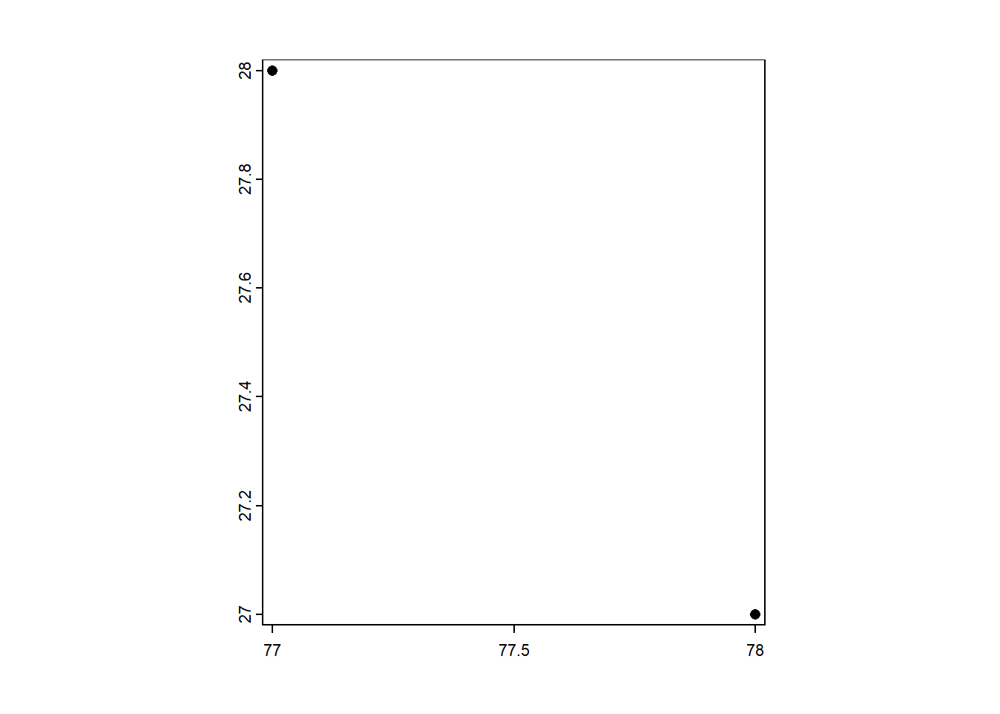
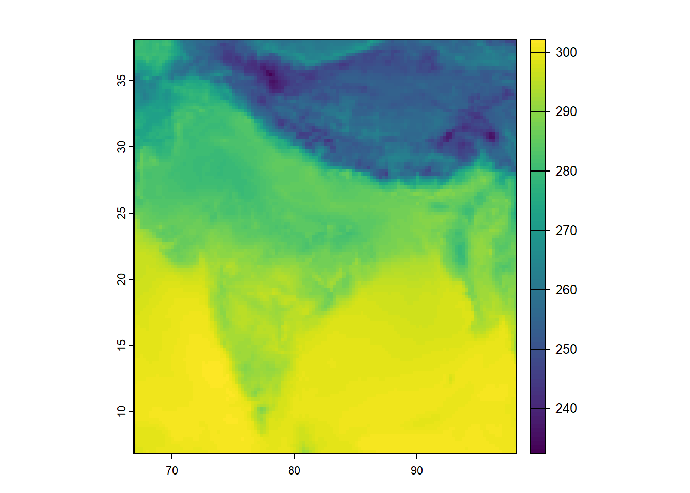
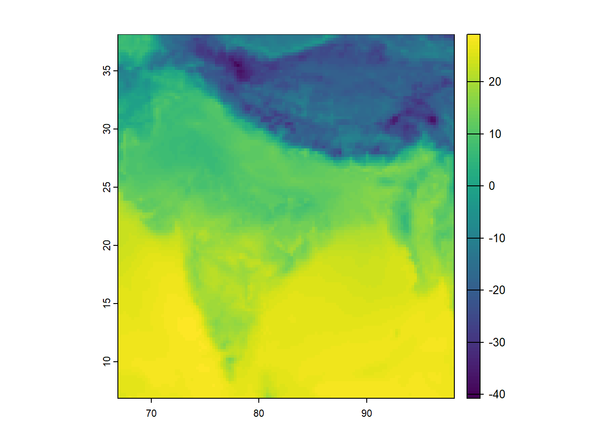
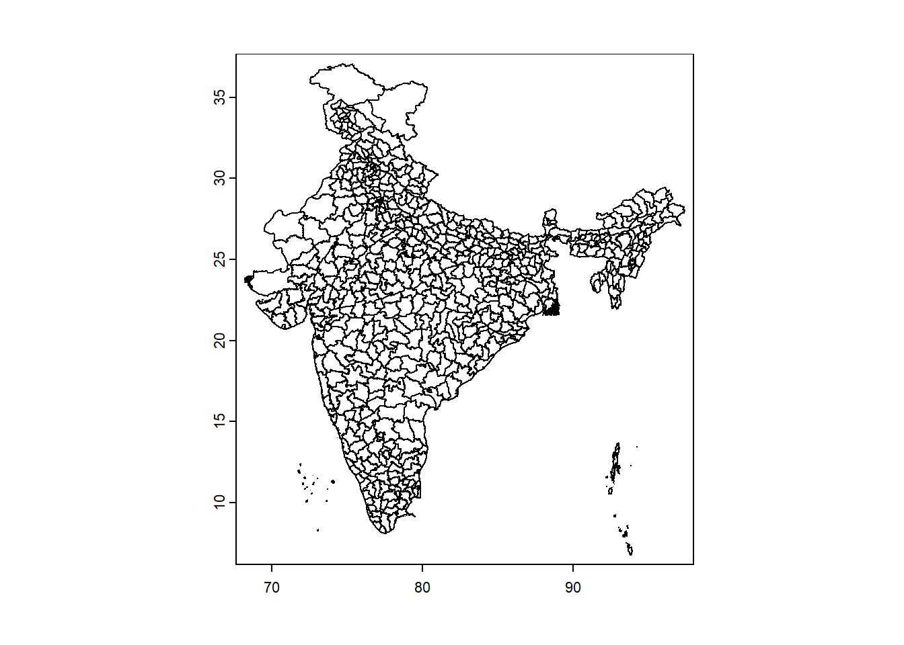
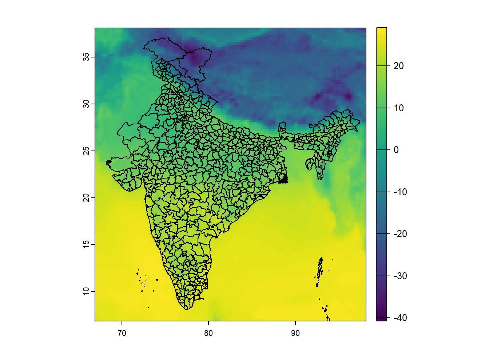
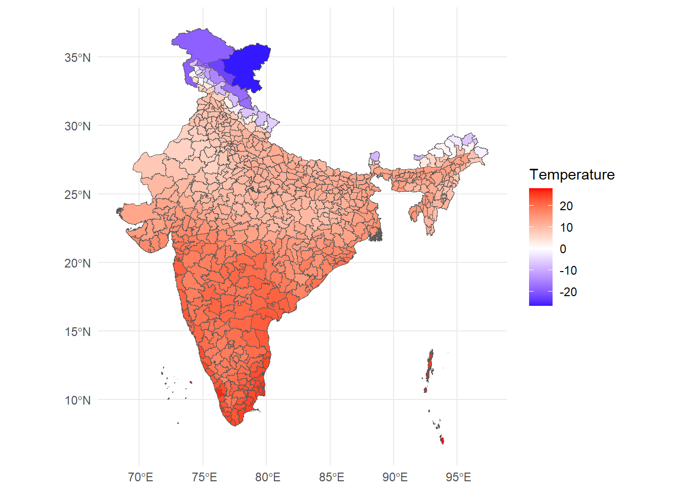

{kind=link}
{kind=link}
{kind=link}
4 + 4[1] 8Suppose we want to answer the following question:
Do heat shocks reduce economic productivity?
Suppose we have firm-level data on output, capital expenditure, wages, and other economic outcomes. Is it feasible to measure temperature?
Not without significant costs. Why?
This requires linking a physical surface (temperature measured in geographic space) to economic units (districts, firms, households).
Economic data are organized by economic/administrative units.
Climate and environmental data are organized by geography.
Spatial data provides the bridge between the two. We can answer this question with two sets of data: firm/plant locations and spatial temperature data.
I’ve motivated one example of why spatial data can be useful to economists. Here are two more.
Burgess et al. (2012) ask:
How does administrative delimitation affect deforestation in Indonesia?
Forestry in Indonesia is heavily regulated. However, local officials may be bribed to overlook illegal logging. This creates a serious measurement problem: administrative forestry statistics, often produced in collaboration with local officials, may be systematically misreported.
Burgess et al. (2012) overcome this problem using satellite imagery to measure deforestation. They combine:
They find:
Each additional district created within a province increases the province’s deforestation rate by 8.2 percent - local prices fall in the province by 3.3 percent.
Essentially, districts engage in Cournot-style competition in determining how much wood to extract from their forests.
Without satellite-based spatial data, the study would have been constrained to potentially biased administrative statistics.
Patel (2025) asks:
What are the economic consequences of floods?
Flooding in Bangladesh is frequent, highly localized, and often poorly measured. Existing flood databases—such as those based on news reports or government records—systematically miss smaller or short-term floods, especially in poorer or more remote areas.
This creates a fundamental measurement problem: if floods are undercounted or mismeasured, we cannot credibly estimate their economic impact.
Patel combines:
Radar-based satellite measurements of surface water, which allow daily detection of inundation
Administrative boundary data for Bangladesh’s 5,158 unions (small local government units) to assign flood exposure precisely in space
Satellite-based nighttime lights as a proxy for economic output
He finds:
Floods cause large, negative, and persistent (up to 7 years) declines in economic activity.
Significant heterogeneity based on previous flooding history - past inundation exposure mitigates damages
Returning to the original question:
Does heat reduce economic productivity?
We will work through one step of answering this question by creating and plotting a spatial dataset of temperature at the district level.
This is what it will look like.

R is a free and open-source programming language used mainly for stats and complex data visualization. Think of R as a fancy calculator with lots of memory: that is all we need it for.
Try this out:
4 + 4[1] 8R is vectorised - it thinks of everything in terms of vectors. Let’s create one:
temp <- c(28,30,32,34)Now, I can use the temp variable to perform statistical operations on the vector.
mean(temp)[1] 31Binding several vectors together, we can create a dataframe. This is R’s approximation of a table.
df <- data.frame(
lon = c(77, 78),
lat = c(28, 27),
temp = c(300, 312)
)head(df) lon lat temp
1 77 28 300
2 78 27 312Here’s where R being vectorised is helpful - we can run operations on entire columns at once. We use the $ operator to pinpoint a column from a dataframe.
Consider the following - right now, temp is in Kelvin. Let’s convert it to degrees Celsius.
df$tempC <- df$temp - 273.15
head(df) lon lat temp tempC
1 77 28 300 26.85
2 78 27 312 38.8590% of data work is just creating new columns.
We will use the library terra for spatial data manipulation.
library(terra)Up until Section 2.1, df is just a regular dataframe.
It has longitude and latitude columns, but R does not yet “know” that these numbers represent geographic coordinates.
To turn this into spatial data, we must tell R:
The Earth is a three-dimensional globe, but our maps are flat.
To display locations on a screen, we must mathematically project the curved surface of the Earth onto a two-dimensional plane.
Whenever we work with spatial data, we are making a mathematical choice about how to represent the curved surface of the Earth on a flat plane. That choice is called a projection, and the full set of rules that define how coordinates map to the Earth is called a Coordinate Reference System (CRS).
Important! Different spatial layers must share the same CRS in order to align correctly.
df_vect <- vect(
df,
geom = c("lon", "lat"),
crs = "EPSG:4326"
)
df_vect class : SpatVector
geometry : points
dimensions : 2, 2 (geometries, attributes)
extent : 77, 78, 27, 28 (xmin, xmax, ymin, ymax)
coord. ref. : lon/lat WGS 84 (EPSG:4326)
names : temp tempC
type : <num> <num>
values : 300 26.85
312 38.85This is no longer a dataframe — it is a SpatVector. Spatial data = geometry + attributes.
Let’s plot these points.
plot(df_vect)
At this point, we have created spatial data manually.
Consider however: the core dataframe has not changed. The difference is that terra now knows these rows live somewhere in space.
Later, when we overlay ERA5 grids with district boundaries, this geometric awareness will allow us to compute zonal statistics.
Before we touch ERA5, we need to understand two fundamental types of spatial data.
Vector data represents discrete objects: lines (roads, rivers) or polygons (districts, states, countries)
Each feature has: a) A geometry (its shape) b) Attributes (data attached to it)
The vector data we will work are district boundaries (polygons) of India.
Raster data represents nearly-continuous surfaces: temperature, precipitation, pollution concentration. Photographs are one kind of raster data.
A raster is a grid of equally sized pixels with each pixel having some value.
ERA5 temperature is raster data.
Consider a scenario: you want to find the effect of temperature on some economic outcome (prices, output, delinquency rates).
To compute district-level climate data:
This process is called zonal statistics.
Temperature data is available from several sources. In India, the India Meteorological Department (IMD) provides station-based observations. Internationally, agencies like NASA, NOAA, and the European Centre for Medium-Range Weather Forecasts (ECMWF) provide gridded climate datasets.
In this workshop, we use ERA5, produced by ECMWF under the Copernicus Climate Change Service. ERA5 is a global reanalysis dataset that combines weather models with billions of historical observations to produce consistent, high-resolution gridded data over time. It is widely used in economics because it offers: (i) global coverage, (ii) long time series, (iii) daily or hourly frequency, and (iv) internally consistent measurement across space and time — making it ideal for panel and spatial analysis.
For temperature data, we will use the file emailed to you earlier.
Be sure to set the path in the below code to where you saved the file.
r <- rast("era5_20250101_0000.nc")
rclass : SpatRaster
dimensions : 125, 125, 1 (nrow, ncol, nlyr)
resolution : 0.25, 0.25 (x, y)
extent : 66.875, 98.125, 6.875, 38.125 (xmin, xmax, ymin, ymax)
coord. ref. : lon/lat WGS 84 (CRS84) (OGC:CRS84)
source : era5_20250101_0000.nc
varname : Band1 (GDAL Band Number 1)
name : Band1
unit : K Notice what R tells us:
Number of rows and columns → grid dimensions
Extent → geographic coverage
Resolution → size of each grid cell
CRS → coordinate reference system
Let’s look at the raw raster data.
plot(r)
ERA5 provides temperature in K. Therefore, similar to our exercise in Section 2.1, we convert K to degrees Celsius.
r <- r - 273.15
plot(r)
This is called raster algebra. The subtraction is applied to every grid cell.
Now we load India district boundaries. This is vector data: polygons (the district shapes) with attributes (district names, state they belong to, any other data you wish to append).
ind <- vect("India-Districts-2011Census.shp")
plot(ind)
Reminder: when working with two spatial datasets, they must share the same CRS to align correctly.
Which one should we transform?
In general:
Vector data can be reprojected losslessly
Raster data should not be repeatedly reprojected, because reprojection requires interpolation and can alter pixel values
ind <- terra::project(ind, crs(r))Now, let’s overlay them.
plot(r)
plot(ind, add = TRUE)
We now have:
These are in the same coordinate system, so they align.
Quick refresher of our goal:
For each district polygon, compute the mean temperature of all grid cells inside it. This operation is called zonal statistics.
district_means <- extract(
r,
ind,
fun = mean,
na.rm = TRUE
)
head(district_means) ID Band1
1 1 20.321637
2 2 10.193099
3 3 14.605534
4 4 18.412855
5 5 10.906966
6 6 8.665885What happened here?
extract() identifies all raster cells within each polygonfun = mean computes the averageNow we attach this back to the district polygons.
ind$mean_temp <- district_means[,2]To plot spatial data, we use the following libraries.
library(ggplot2)
library(tidyterra)Let us now plot the aggregated result.
ggplot() +
geom_spatvector(data = ind, aes(fill = mean_temp)) +
scale_fill_gradient2(
low = "blue",
mid = "white",
high = "red",
name = "Temperature"
) +
theme_minimal()
At this stage, we can already begin asking substantive questions:
Today we used a single ERA5 file — one hour of temperature, one country.
But ERA5 is much richer than that:
In real research, we rarely use raw hourly data. Instead, we typically:
The core logic, however, remains the same.
The important takeaway is that we now understand how to convert gridded climate data into administrative units that can be used in economic analysis.
Once you understand this transformation, you can work with almost any geospatial climate dataset.